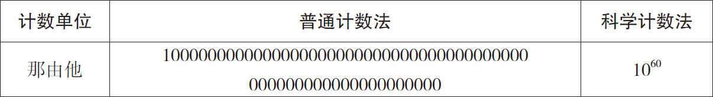
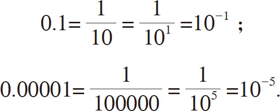
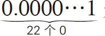
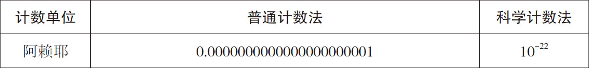
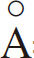

）
”，1
）
”，1 大家从出生到现在接触过很多数吧，还记得其中最大的是哪个、最小的是哪个吗？美国富豪们的家产可以达到十几万亿日元，日本的国家预算大约为100万亿日元。日常生活中能看到的最大的数，也就这么大了。但是，总会有一些领域有机会接触更大的数。例如，化学中将12克碳中含有的碳原子数称为“阿伏伽德罗常数”，约为6000垓，这个数在计算与化学反应相关的数据时作用相当大。“垓”是指在1后面加20个零的计数单位。我们知道，比亿大的计数单位是万亿，然后是京、垓。
人类的认知能力是有限的，据说可以一眼判断的数最多只有几位数而已。所以，如果用十进制表示一个超级大的数，0的个数会特别多，一下子很难数清究竟有多少位。因此通常会用更为简便的“科学计数法 ”。所谓科学计数法不是数字中有多少0就写多少0，而是以“10位数 ”的形式来表示。例如，“那由他”是一个非常大的计数单位，表示1后有60个零，我们分别用普通计数法和科学计数法表示这个数，如表4.1所示。
表4-1 分别用普通计数法和科学计数法表示那由他

普通计数法和科学计数法哪种更便捷，一目了然。所以， 1那由他＝1060 ，3那由他＝3×1060 ，8那由他3562阿僧祇＝8.3562×1060 。科学计数法比汉字更简洁明了，计算起来也更快。因此，我们通常采用它来表示超级大的数。
同理，要表示超级小的数，也可以采用科学计数法。例如，1以下的小数用科学计数法表示是这样的：

可以看出，只要在指数的位置加上负号就可以了。例如，

是一个1的前面有22个零的超级小的数，相应的计数单位为“阿赖耶”。我们也分别用普通计数法和科学计数法表示这个数，如表4-2所示。表4-2 分别用普通计数法和科学计数法表示阿赖耶

显然，相较于普通计数法，科学计数法更加简洁。物理学中测量原子等的微小结构时使用的长度单位是“埃（
）
”，1

＝10-10 米，其相当于1毫米（10-3 米）的千万分之一。本章将介绍一些超级大的数，所以相对于普通的计数单位，科学计数法的使用将会变得很频繁。如果很难想象它们的大小，可以参考一下表4-3和4-4。这样应该会更容易把握，例如1万亿等于1012 。
表4-3 大数的计数单位
| 十 | 101 | 沟 | 1032 |
| 百 | 102 | 涧 | 1036 |
| 千 | 103 | 正 | 1040 |
| 万 | 104 | 载 | 1044 |
| 亿 | 108 | 极 | 1048 |
| 万亿 | 1012 | 恒河沙 | 1052 |
| 京 | 1016 | 阿僧祇 | 1056 |
| 垓 | 1020 | 那由他 | 1060 |
| 秭 | 1024 | 不可思议 | 1064 |
| 穰 | 1028 | 无量 | 1068 |
表4-4 小数的计数单位
| 分 | 10-1 | 模糊 | 10-13 |
| 厘 | 10-2 | 逡巡 | 10-14 |
| 毫 | 10-3 | 须臾（飞） | 10-15 |
| 丝 | 10-4 | 瞬息 | 10-16 |
| 忽 | 10-5 | 弹指 | 10-17 |
| 微 | 10-6 | 刹那（阿） | 10-18 |
| 纤 | 10-7 | 六德 | 10-19 |
| 沙 | 10-8 | 虚空 | 10-20 |
| 尘（奈、纳） | 10-9 | 清净（仄） | 10-21 |
| 埃 | 10-10 | 阿赖耶 | 10-22 |
| 渺 | 10-11 | 阿摩罗 | 10-23 |
| 漠（皮） | 10-12 | 涅槃寂静（攸） | 10-24 |